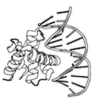

Installing BioPandas 
PyPI
You can install the latest stable release of biopandas directly from Python's package index via pip by executing the following code from your command line:
pip install biopandas
Conda-forge
Versions of biopandas are now also available via conda-forge; you can install it via
conda install biopandas -c conda-forge
or simply
conda install biopandas
if you have conda-forge already added to your channels.
Latest GitHub Source Code
You want to try out the latest features before they go live on PyPI? Install the biopandas dev-version latest development version from the GitHub repository by executing
pip install git+git://github.com/rasbt/biopandas.git#egg=biopandas
Alternatively, you download the package manually from PYPI or GitHub, unzip it, navigate into the package, and execute the command:
python setup.py install